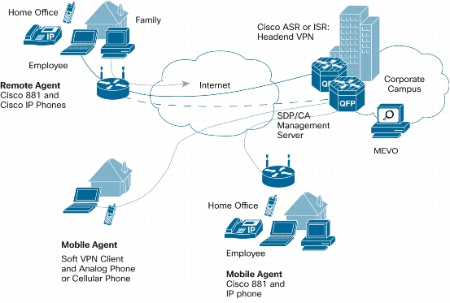
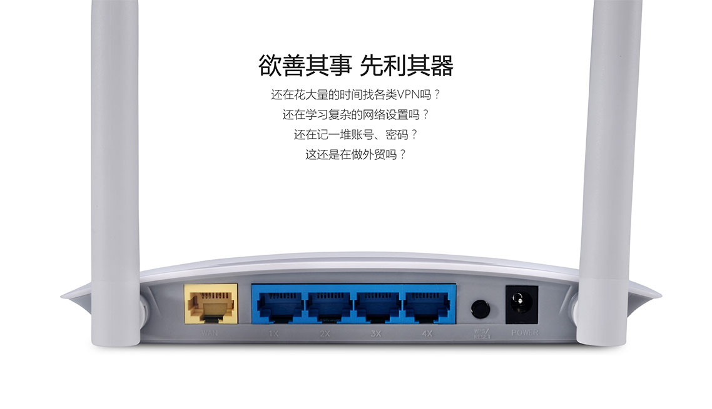

Linkown
外贸公司及跨区(跨国)企业专属VPN
为您搭建一个安全，可靠高速网络环境，为您解决，异地办公室内网互通,异地文件共享, 常用外外贸网站访问慢的问题.
在线咨询
qq: 2696586138
手机: l77l7854693
邮件: sale@linkown.com
支持 Linux, Mac, Windows , 路由器等平台以及 Raspberry Pi

无论您在哪办公，都不会有内网的区别
同一公司异地办公，文件只能内网访问， 系统只能内网访问. 只要能接入互联网，我们就可以帮您建立一个没有内外区别的网络环境!

国际网络加速 做外贸快人一步
支持Google、Facebook高速访问;全球5000+常用外贸网站加速访问; 国际邮件收发、语音视频更流畅
稳定
唯一采用自主研发硬件路由技术，彻底解决上外网容易掉线问题，保证每个员工的上网体验，提高工作效率.
智能分流技术
独创智能分流技术，国内网站走本地宽带，国外网站走专用网络，不用手动反复切换服务器，更快，更智能.
在线咨询
qq: 2696586138
手机: l77l7854693
邮件: sale@linkown.com